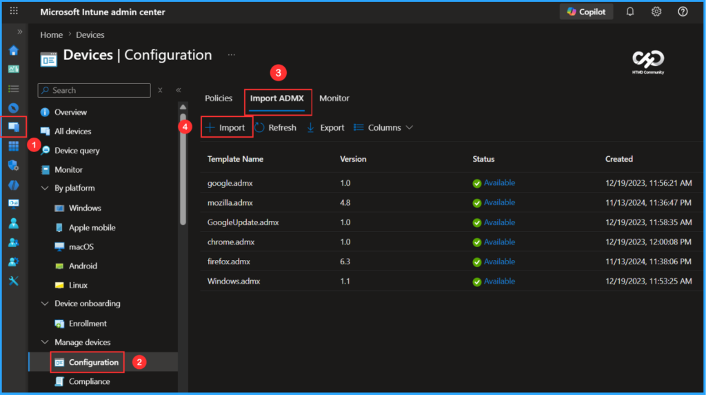
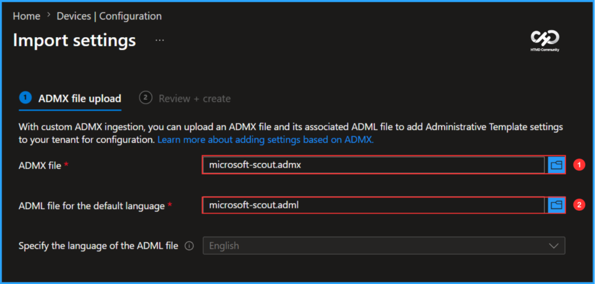
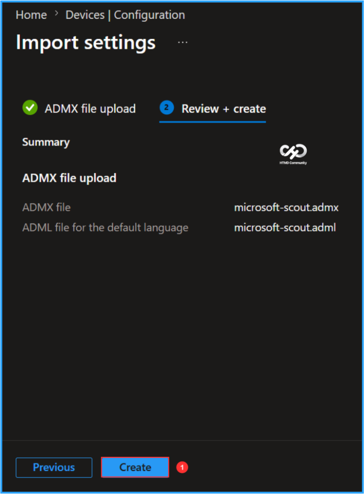
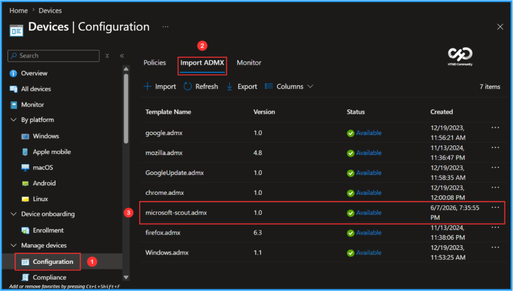

Key Takeaways
- Import the Microsoft Scout ADMX template into Intune to centrally manage Scout settings across your organisation.
- In the Windows ADMX policy UI, this setting appears as “Allow Microsoft Scout Frontier access.”
- ADMX-backed policies enable granular configuration and enforcement without requiring manual changes on individual devices.
- Policy settings can be deployed, monitored, and updated directly from the Intune admin center, simplifying management.
- Combining Scout ADMX policies with Intune helps ensure a consistent, secure, and compliant configuration across all managed Windows devices.
In this blog post am going to explain how to import the Microsoft Scout ADMX template into Microsoft Intune. Microsoft Scout Frontier is a preview feature that provides early access to Microsoft’s latest AI innovations. To enable Scout for managed users, Intune administrators must configure the Allow Microsoft Scout Frontier access policy (AllowScoutFrontierAccess capability) in the Windows ADMX policy settings. Access is limited to organizations enrolled in the Frontier preview program and that have accepted the participation terms. As a preview feature, functionality and availability may change over time and may not be released for general availability.
Table of Content
Prerequisites
To get started, make sure you have the following. These requirements must be in place before you can import the Microsoft Scout ADMX templates and configure Microsoft Scout policies in Intune.
- A Microsoft 365 work or school account associated with your organization. Personal Microsoft accounts are not supported.
- Intune tenant administrator credentials.
Access to the Microsoft Intune admin center at https://intune.microsoft.com. The Microsoft Scout Windows policy template files: microsoft-scout.admx and microsoft-scout.adml
How to Import Scout ADMX Administrative Templates using Intune
We generally do not recommend this import method for ADMX templates. Once the latest updates (Scout) are available in the Settings Catalog, configuring any policies is the ideal approach.
To import the Microsoft Scout ADMX template in Intune, follow these steps. Login to the Microsoft Intune Admin Center with your admin credentials.
- Navigate to Devices > Windows > Manage devices > Configuration
- Click on Import ADMX > +Import

With custom ADMX ingestion, you can upload an ADMX file and its associated ADML file to add Administrative Template settings to your tenant for configuration. Before that, you can download these template and profile files from GitHub.
- ADMX file – microsoft-scout.admx
- ADML file for the default language – microsoft-scout.adml
- Specify the language of the ADML file (Specify the language code for the default language ADML file) – English

You need to review your settings in the Review + create tab. After clicking Create, your changes are saved, and the profile will start uploading to Intune.

Finally the screenshot below shows that the microsoft-scout.admx has been successfully created and available for use. It also shows details such as the Template Name, Version, Status, and Created date.
Note: You may notice the name Clawpilot in certain preview Intune policy templates or screenshots. This was the product’s internal codename before it was officially released as Microsoft Scout.

Need Further Assistance or Have Technical Questions?
Join the LinkedIn Page and Telegram group to get the latest step-by-step guides and news updates. Join our Meetup Page to participate in User group meetings. Also, join the WhatsApp Community to get the latest news on Microsoft Technologies. We are there on Reddit as well.
Author
Vaishnav K has over 12 years of experience in SCCM, Intune, Modern Device Management, and Automation Solutions. He writes and shares knowledge about Microsoft Intune, Windows 365, Azure, Entra, PowerShell Scripting, and Automation. Check out his profile on LinkedIn.